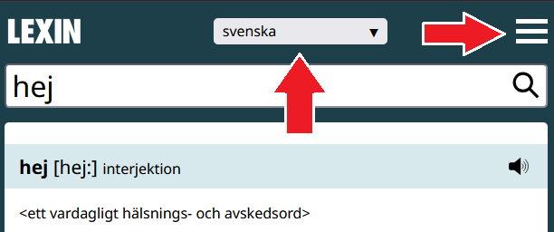
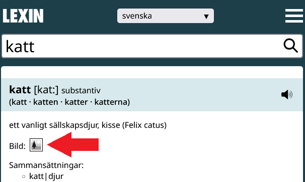
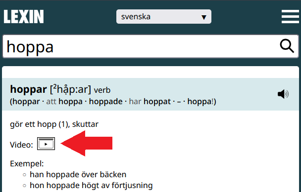
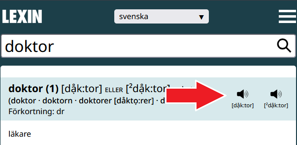
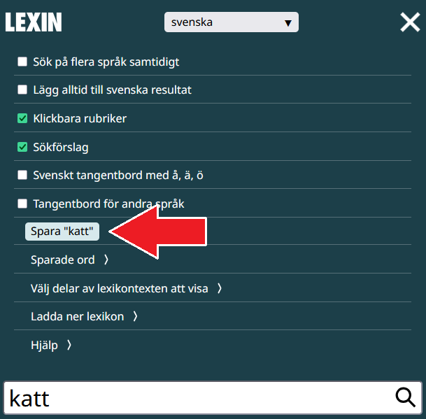
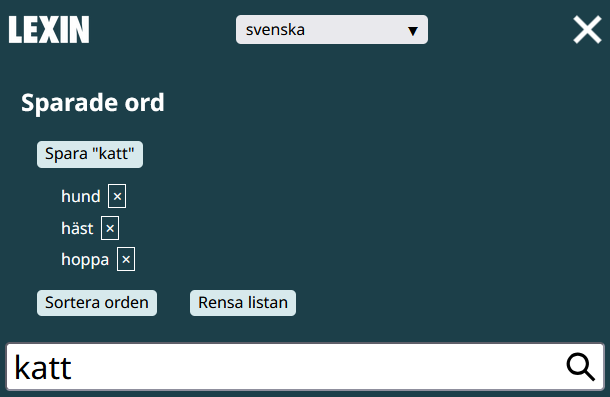
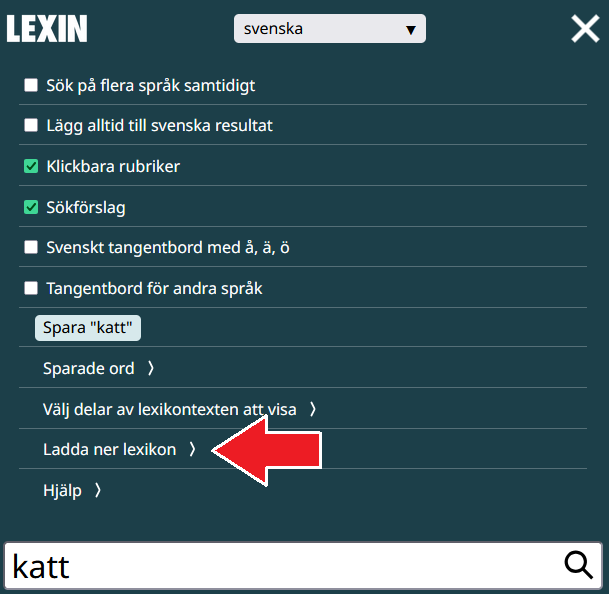

Hur man använder webbplatsen
Här kan du läsa om hur man använder de olika delarna av Lexins webbplats.
Språk

- Välj språk längst upp på sidan i rullistan "Språkval", t.ex. spanska.
- Du kan slå upp ord på flera språk genom att öppna "Visa inställningar" (knappen med tre streck "≡") och klicka på "Sök på flera språk samtidigt". Med knappen "Välj språk" kan du nu välja flera språk, genom att klicka på dem. Om du använder en mobil trycker du på de språk du vill välja.
- För att alltid få sökresultaten från den svenska ordboken, som har många ord, kan du också öppna "Visa inställningar" och klicka på "Lägg alltid till svenska resultat".
Bilder


- Många ord har bilder som hjälper till att förklara ordet. För att visa en bild, klicka på den lilla bildikonen "Visa bild i Lexin" bredvid texten "Bild:".
- Bilderna har också samlats i olika tematiska grupper, t.ex. ord som handlar om matlagning.
Videoklipp

- Ord kan ha ett eller flera videoklipp som visar vad ordet betyder.
- Du kan klicka på den lilla videoikonen "Visa videon i Lexin" bredvid texten "Video:" för att visa filmen.
- Om du inte vill se videoklippet mer kan du klicka på ikonen en gång till ("Stäng videon") för att gömma videon.
Ljud

- För att höra hur ett ord uttalas på svenska kan du klicka på högtalarsymbolen "Lyssna på uttalet".
- Ord kan ha flera sätt att uttalas. Då finns det flera alternativ för "Lyssna på uttalet".
Uttal
- Uttalet beskrivs också med fonetisk skrift, t.ex. "idag [ida:g] eller [ida:]".
- Kolon ":" betyder att ljudet före ska vara ett långt ljud.
- När det finns två eller flera uttal skrivs det med "eller" mellan uttalen. "[ida:g] eller [ida:]" betyder att det går att uttala sista bokstaven "g" och att det går att hoppa över "g", båda uttalen är okej.
- Det finns mer information om den fonetiska skriften längre ned på sidan.
Klicka på ord
- Rubriker i förklaringarna kan du klicka på för att öppna hjälpsidor. Om du inte vill att vissa rubriker ska öppna hjälpsidor kan du öppna "Visa inställningar" (knappen med tre streck "≡") och välja bort "Klickbara rubriker".
Tangentbord


- Du kan få hjälp med inmatning av tecken som din dator eller mobil saknar.
- Öppna "Visa inställningar" (knappen med tre streck "≡") och välj "Svenskt tangentbord med å, ä, ö" för att få upp tre knappar som kan mata in de svenska tecknen "å", "ä" och "ö" om din dator eller mobil inte har svenska tecken.
- Öppna "Visa inställningar" och välj "Tangentbord för andra språk" för att få hjälp med tecken på det språk som används i lexikonet du har valt. Om du har valt att söka i Lexin med arabiska översättningar får du hjälp med inmatning av arabiska tecken.
Spara ord


- Du kan spara ord du har slagit upp.
- Öppna "Visa inställningar" (knappen med tre streck "≡"). Där finns en "Spara"-knapp.
- För att se de ord du har sparat kan du klicka på "Sparade ord" under "Spara"-knappen.
- Du kan slå upp ett sparat ord genom att klicka på ordet i listan.
- Du kan sortera alla sparade ord i bokstavsordning med knappen "Sortera orden".
- Du kan ta bort alla sparade ord med knappen "Rensa listan".
Andra söktips
- För att få fram sammansatta ord gör du så här: Skriv "regn-" så får du fram alla ord med förledet regn. Skriv "-regn" så får du fram alla ord med efterledet regn.
- För att få större text kan du använda din webbläsares zoomfunktion. På en mobil kan du zooma med två fingrar på skärmen. På en dator kan du använda webbläsarens meny, eller Ctrl och plustecken (fungerar oftast på Windows och Linux) eller Cmd och plustecken (på Mac).
Ladda ner lexikon (Lexin offline)

- Du kan ladda ner ett eller flera lexikon från Lexin.
- När du har laddat ner ett lexikon kan du använda Lexin utan att ha tillgång till Internet.